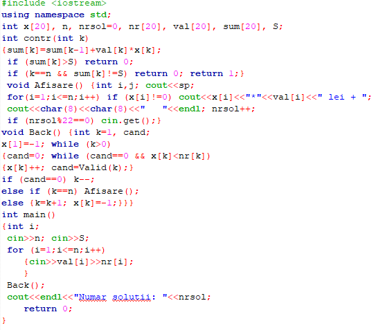
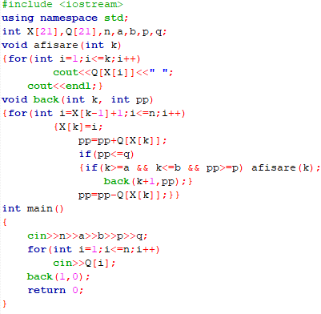
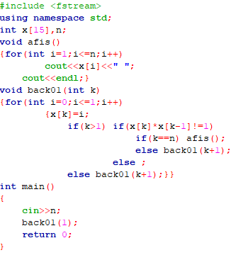
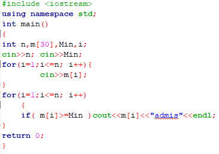
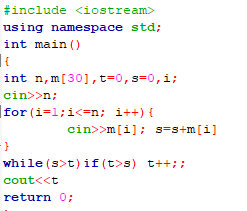
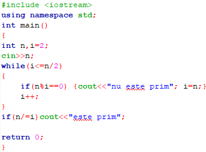
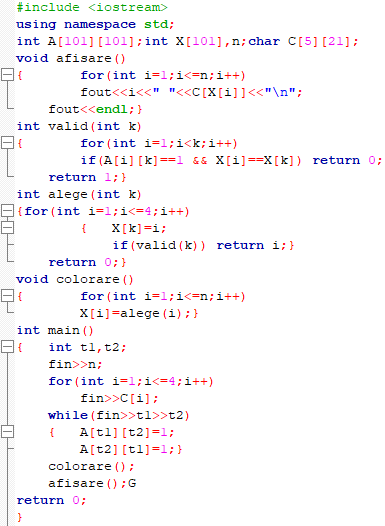
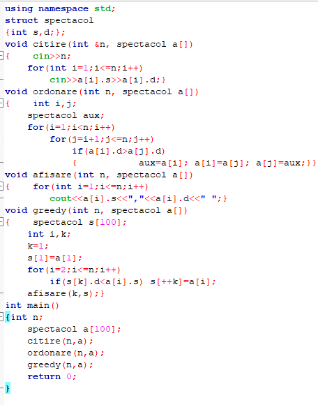
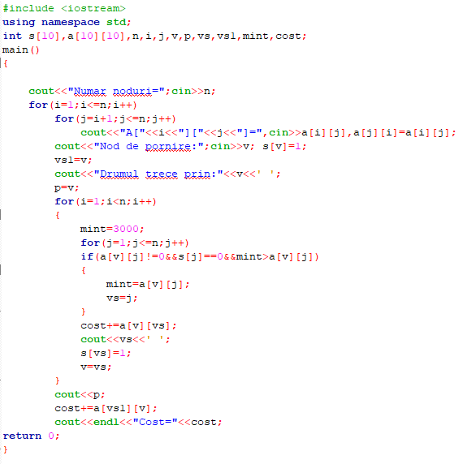

Backtracking este numele unui algoritm general de descoperire a tuturor soluțiilor unei probleme de calcul, algoritm ce se bazează pe construirea incrementală de soluții-candidat, abandonând fiecare candidat parțial imediat ce devine clar că acesta nu are șanse să devină o soluție validă. Exemplul de bază folosit în numeroase manuale de liceu și de nivel universitar este problema reginelor, care cere să se găsească toate modurile în care pot fi așezate pe o tablă de șah opt regine astfel încât să nu se atace. În abordarea backtracking, candidatele parțiale sunt aranjamente de câte k regine pe primele k rânduri ale tablei, toate pe rânduri și coloane diferite. Orice soluție parțială ce conține două regine care se atacă poate fi abandonată, deoarece în mod clar restul de regine nu pot fi așezate într-o soluție validă.
Avand un in portmoneu n lei cu laloarea V, afisati la ecran toate modalitatile de platire a sumei s
Se citesc numerele naturale n,a,b,p,q (n<=20, a<=b<=n, p<=q) si apoi n punctaje diferite ale unor intrebari. Sa se afiseze toate modurile in care se poate alege pentru un test un numar de intrebari cuprins intre a si b si care sa aiba punctajul total intre p si q.
Se citeste un numar natural n. Generati si afisati toate combinatiile de cate n cifre binare care nu au doua cifre de 1 alaturate.
Se numeşte metoda metoda triarii ce indentifică toate soluţiile unei probleme în dependenţă de mulţimea soluţiilor posibile. Toate soluţiile se identifică prin valori, ce aparţin tipurilor de date studiate: integer, boolean, enumerare, char, subdomeniu, tablouri unidimensionale. Fie P o problemă, soluţia căreia se află printre elementele mulţimii S cu un număr finit de elemente. S={s1, s2 , s3 , ... , sn} . Soluţia se determină prin analiza fiecărui element si din mulţimea S.
Este dat o lista cu n elevi, fiecare avand media M, apoi se citeste media de intrare min. Afisati la ecran mediile trecatoare.
Se citeste de la ecran pretul produselor cumparate si numarul de produse cumparate. Sa se determine cit va fi totalul.
De la ecran se citeste un numar. De determinat daca este prim.
Algoritmii greedy formează o paradigmă algoritmică care urmează euristica rezolvării de probleme care face la nivel local alegerea optimă pentru fiecare etapă în speranța de a găsi un optim global. În multe probleme, o strategie greedy produce, în general, o soluție optimă, dar cu toate acestea o euristică greedy poate produce la nivel local soluții optime care aproximează o soluție optimă globală într-un timp rezonabil.
Fiind data o harta cu n tari, se cere o solutie de colorare a hartii, utilizand cel mult patru culori, astfel incat doua tari ce au frontiera comuna sa fie colorate diferit. Este demonstrat faptul ca sunt suficiente numai patru culori pentru ca orice harta sa poata fi colorata.
O persoana are un rucsac cu care poate transporta o greutate maxima g. Persoana are la dispozitie n obiecte pentru care stie greutatea si castigul obtinut daca transporta obiectul. Fiecare obiect poate fi transportat integral sau taiat. Sa se precizeze ce obiecte alege persoana si in ce proportie le ia astfel incat castigul total sa fie maxim si sa nu se depaseasca greutatea maxima a rucsacului.
Un comis-voiajor pleaca dintr-un oras, trebuie sa viziteze un numar de orase si sa nu se intoarca in orasul de unde a plecat cu efort minim. Orice oras i este legat printr-o sosea de orice alt oras j printr-un drum de A[i,j] kilometri.Se cere traseul pe care trebuie sa-l urmese comis-voiajorul, astfel incat sa parcurga un numar minim de kilometri.
